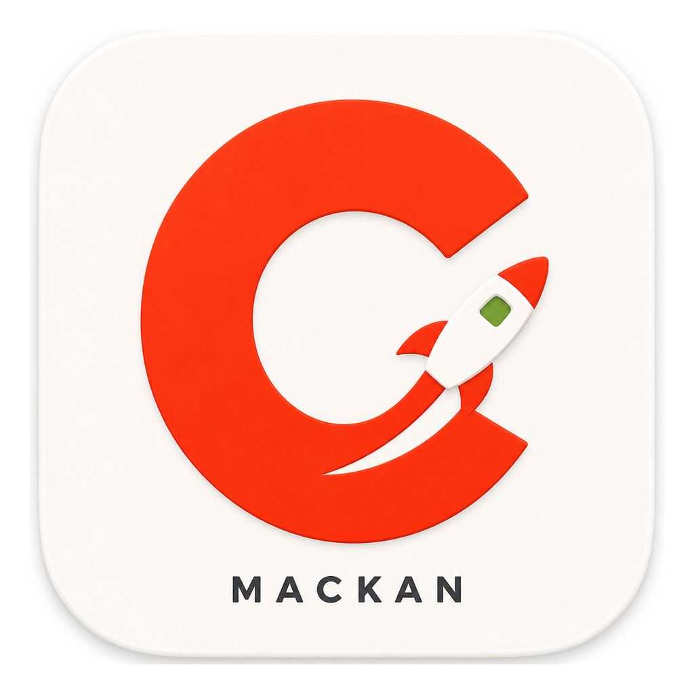
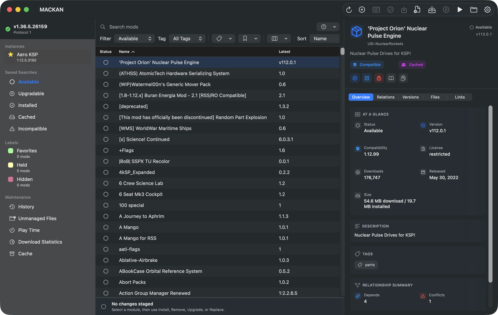

Available now
GitHub Releases publishes a universal preview app archive for testing the native macOS interface. The current forum-ready build is v0.1.0-preview.1.
Open v0.1.0-preview.1
MACKANNative macOS CKAN mod management for Kerbal Space Program.
A public preview of a SwiftUI/AppKit desktop app backed by CKAN Core, built for Mac players who want the familiar CKAN workflows without opening Terminal.
Current preview: v0.1.0-preview.1. Builds are ad-hoc signed and not notarized yet. New Macs may require Privacy & Security approval until a signed DMG is ready.

MACKAN is usable as a public preview, while production distribution is still blocked on Mac release signing.
GitHub Releases publishes a universal preview app archive for testing the native macOS interface. The current forum-ready build is v0.1.0-preview.1.
Open v0.1.0-preview.1The public DMG still needs Developer ID signing, hardened runtime, notarization, stapling, checksums, provenance, and clean-install smoke checks.
Read release checklistThe native app owns the macOS experience. CKAN Core remains the source of truth for metadata, dependency resolution, downloads, installs, and registry state.
Add, clone, rename, select defaults, reveal folders, edit launch options, and launch KSP.
Search, filters, labels, table columns, sorting, status badges, and native module details.
Install, remove, upgrade, replace, review dependencies, and apply operations with recovery.
Repository refresh, cache cleanup, registry repair, import/export, statistics, and settings.
The current preview is intended for Mac testers who are comfortable opening an ad-hoc signed app.
MACKAN-0.1.0-preview.1-macOS.app.zip and the matching checksum from the preview release.
.sha256 file.
MACKAN.app.
The most useful reports cover first launch, existing CKAN data, Steam or manual KSP installs, repository refresh, catalog browsing, and install or upgrade previews.